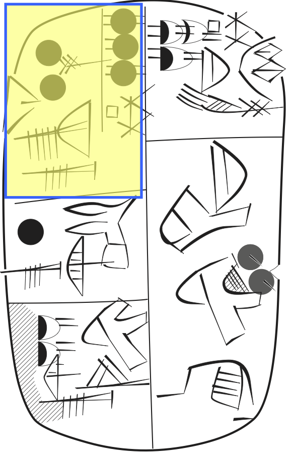

Imagery¶
The Cuneiform Digital Library Initiative CDLI contains photographic and lineart imagery for tablets and individual ideographs in the Uruk IV/III corpus.
Here we show how we can employ them.
More details of the provenance of the images can be found in about.
The lineart and photo and cdli functions¶
We have made utility functions lineart(nodes) and photo(nodes) in the cunei module.
They look up the photos and linearts for nodes, and show them in a row.
The cdli(node) function produces a link to the archival page of the tablet corresponding to node.
Caveat: We will use a few functions we have not explained before. See this chapter as a showcase of what can be done. You want to return to this after you have digested further chapters.
Start up¶
We import the Python modules we need.
%load_ext autoreload
%autoreload 2
import sys, os
from tf.app import use
We set up our working locations on the file system.
A = use('uruk:clone', checkout="clone", hoist=globals())
# A = use('uruk', hoist=globals())
Data: URUK, Character table, Feature docs
Features:
Tablets¶
We will work with two example tablets.
pNum1 = 'P000014'
pNum2 = 'P000022'
Let’s first show the pretty displays of their transcriptions.
p1Node = T.tabletNode(pNum1)
p2Node = T.tabletNode(pNum2)
A.pretty(p2Node)
.jpg)


If you want only one face, you can do that.
for f in L.d(p2Node, otype='face'):
A.pretty(f)
Or we could do it per column:
for f in L.d(p2Node, otype='column'):
A.pretty(f, withNodes=True)
We start with showing one photo. Note, that if you click on the photo, you will be taken to a higher resolution version on CDLI.
And if you click on the caption, you will be taken to the main page for the tablet on CDLI.
If you want it smaller, you can set the width.
The width may be an integer indicating the amount of pixels, or any string that is acceptable as a measure in CSS.
A.photo(pNum1, width=200)
A.photo(pNum1, width="10em")
If you do not want to show the caption, say:
You can position the caption:
A.photo(pNum1, width=100, withCaption='top')
A.photo(pNum1, width=100, withCaption='left')
A.photo(pNum1, width=100, withCaption='right')
Instead of providing a P-number, you can also specify a node:
tablet1 = T.nodeFromSection((pNum1,))
tablet2 = T.nodeFromSection((pNum2,))
If you want to show them in a row:
If you want to show the links only, not the images themselves:
If you also want the links to the main pages on CDLI:
Lineart¶
Tablets¶
We show the lineart for our example tablets:
Again, we can identify the tablets equally well with their nodes. Let’s make them smaller:
We can set a height and a width, they act as maximum constraints.
If you insist that the width should be fully realized, you can use a ! in fron of the value.
Note that this distorts the aspect ratio. But sometimes you may want that.
Keys¶
Some tablets have additional linearts. We can select them by their key. The default lineart is keyed by the empty string, and this one will be chosen if you do not pass a key, as we did above.
In order to know which keys there are for a tablet, just call lineart with a non-existing key:
pNum3 = 'P003553'
A.lineart(pNum3, key='xxx')
So this tablet has the empty key, and also key d.
Let’s get the latter one:
A bit smaller:
A.lineart(pNum3, key='d', width=600)
We navigate to a famous example tablet and show the lineart.
pNumX = 'P005381'
A.lineart(pNumX, width=300)

We also want to see the transcription.
tabletX = T.nodeFromSection((pNumX,))
sourceLines = A.getSource(tabletX)
print('\n'.join(sourceLines))
&P005381 = MSVO 3, 70
#atf: lang qpc
@obverse
@column 1
1.a. 2(N14) , SZE~a SAL TUR3~a NUN~a
1.b. 3(N19) , |GISZ.TE|
2. 1(N14) , NAR NUN~a SIG7
3. 2(N04)# , PIRIG~b1 SIG7 URI3~a NUN~a
@column 2
1. 3(N04) , |GISZ.TE| GAR |SZU2.((HI+1(N57))+(HI+1(N57)))| GI4~a
2. , GU7 AZ SI4~f
@reverse
@column 1
1. 3(N14) , SZE~a
2. 3(N19) 5(N04) ,
3. , GU7
@column 2
1. , AZ SI4~f
Ideographs¶
We want to show the ideographs for case 1.a in column 1.
If you click on an ideograph, you will be taken to the image file on CDLI. However, due to some discrepancies between the ideographs in the CDLI big list and their download package, some of these links may be broken.
case = A.nodeFromCase((pNumX, 'obverse:1', '1a'))
for ideo in A.getOuterQuads(case):
A.lineart(ideo, withCaption=False, height=50)
.jpg)


Note that the images are stacked vertically.
Images in a row¶
You can also have lineart() put images in a row.
Just pass multiple nodes to it.
In this case we also show the captions. The link under the caption goes to a big list on CDLI with all ideographs.
You can also call up these images by the name of the quad or sign:
Existence of images¶
Sometimes you want to test whether an image exists. So far, if an image does not exist, a placeholder warning text is output.
But if you say warning=False, the empty string is output.
That makes it easy to test whether an image is present and do something about it.
pNum3 = 'P000013'
A.lineart(pNum3)
A.lineart(pNum3, warning=False)
''
If we prefer lineart, but in its absence accept a photo, we can say:
When there is lineart, it will be chosen:
A.lineart(pNum2, warning=False) or A.photo(pNum2)
True
Likewise, you can test wether there is lineart for ideographs:
A.lineart('SZE', warning=False) or 'no lineart for SZE'
'no lineart for SZE'
A.lineart('SZE~a', warning=False) or 'no lineart for SZE~a'
True
An other, direct way to test whether an image is present is this:
'SZE' in A.imagery('ideograph', 'lineart')
False
'SZE~a' in A.imagery('ideograph', 'lineart')
True
'P000013' in A.imagery('tablet', 'lineart')
False
'P000013' in A.imagery('tablet', 'photo')
True
You can also get the lists of things for which there are images:
ideos = A.imagery('ideograph', 'lineart')
len(ideos)
2095
print(' '.join(sorted(ideos)[0:100]))
1(N01) 1(N01@f) 1(N02) 1(N03) 1(N04) 1(N04@f) 1(N05) 1(N06) 1(N07~a) 1(N07~b) 1(N08) 1(N08@f) 1(N08~b) 1(N09) 1(N11) 1(N12) 1(N14) 1(N14@f) 1(N15) 1(N16) 1(N17) 1(N18) 1(N19) 1(N19@f) 1(N20) 1(N22) 1(N22@f) 1(N23) 1(N24) 1(N24@f) 1(N24~a) 1(N24~b) 1(N25) 1(N26) 1(N26~b) 1(N27) 1(N28) 1(N28~b) 1(N28~c) 1(N29A~b) 1(N29A~c) 1(N29~a) 1(N29~b) 1(N30A~c) 1(N30C~b) 1(N30C~c) 1(N30~a) 1(N30~c) 1(N30~d) 1(N30~e) 1(N31) 1(N32) 1(N33) 1(N34) 1(N34@f) 1(N35) 1(N36) 1(N36@f) 1(N37) 1(N38) 1(N39~a) 1(N39~b) 1(N40) 1(N41) 1(N42~a) 1(N42~b) 1(N43) 1(N44) 1(N45) 1(N45@f) 1(N45~a) 1(N46) 1(N46@f) 1(N47) 1(N48) 1(N48@f) 1(N49) 1(N50) 1(N51) 1(N51@f) 1(N52) 1(N54) 1(N55) 1(N56) 1(N57) 1(N58) 1(N60) 1(N63) 10(N01) 10(N14) 10(N14@f) 10(N57) 10(N58) 12(N14) 12(N58) 2(LAGAB~a) 2(N01) 2(N01@f) 2(N02) 2(N03)
We make a list of all UKKIN ideographs:
ukkin = sorted(i for i in ideos if 'UKKIN' in i)
A.lineart(ukkin, height=30, withCaption=False)
Or a bit bigger, vertically stacked:
for u in ukkin:
A.lineart(u, width=50, withCaption='right')
Annotated images¶
If you want to use an annotated image in a markdown cell, just copy one of the
images you find in the (new) cdli-imagery directory over to the images directory
(or any near directory you like). You might want to give it an other name.
Use an image editor to annotate the image, and use it like this:


If you want to resize, do this
<img src="images/P005381_l-obverse-1a.png" width="200" />
{kind=link}
Online images¶
If you do not need to call up images in your notebook, but you want the online links to their counterparts on CDLI, that is also possible.
N.B.: Some of these links might be broken.